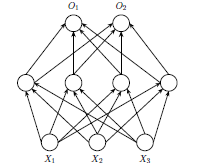

Code Projects
|
Linaia-Agon [code] |
|
|---|---|
| Iannis Xenakis's musical piece Linaia-Agon consists of 4 zero-sum games. | |
| The games correspond to a mythical duel between Linus and Apollo. | |
| Moves in each game matrix correspond to a musical note or passage. | |
|
A natural question is: what are Linus's odds of winning? (Hint: very low.) By simulating many duels (under various parameters), we can answer it. |
|
Rbitrage |
|
|---|---|
| <>.<> | Trading $1 to euros and back: get $1. Many currencies: can get over $1. |
| This program finds maximum profits from misaligned exchange rates. | |
|
Currencies are a graph, edges are exchange rates – use graph algorithms. Shortest path algorithm (Bellman-Ford) finds negative cycles in O(n3) time. |
|
A Rose for Emily [code] [blog] |
|
|---|---|
| Constraint solving in Prolog to analyze non-linear timeslines in stories. | |
| Faulkner's story contains various events, plus inter-temporal references. | |
|
Encode these as equations: if A happened 6 years before B, then A+6=B. |
|
|
The constraint solver shows which orderings of events are consistent. This method formally shows a story's virtuality, or simplex of meaning. |
|
Mapping Poverty [slides] |
|
|---|---|
|  | Hour-long lecture on using neural networks in development economics. |
| Explains neural nets for economists, by analogies with OLS regression. | |
| Surveys research at MIT using convolutional neural nets to estimate GDP. | |
|
Shows how satellite images can proxy for GDP in countries without data. Plan to use in research (based on my thesis) on China's poverty counties. |
|
Genetic Algorithms and Taxes [survey] |
|
|---|---|
| Genetic algorithms solve problems by computational Darwinism. | |
| Solutions ‘compete’ with each other, judged by a fitness function. | |
| Over generations, candidate solutions evolve toward an optimum. | |
| Good for problems where data is unavailable—like tax evasion. |